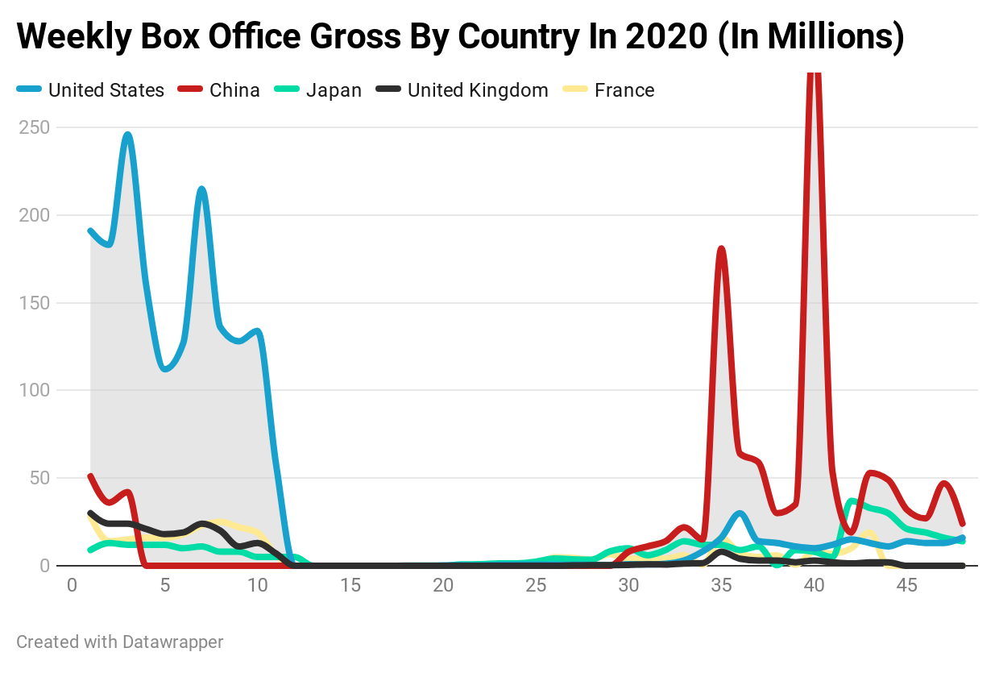

AMC Jersey Gardens, located in Elizabeth, NJ, moments before reopening for the first time in months. Photo by Richard Heaton.
Movie Industry In United States Is Failing Compared to Other Countries Post Covid.
By Richard Heaton
December 1, 2020
When compared to other countries and their handling of the reopening of movie theaters, the United States has failed.
At the start of 2020, the United States averaged more than $100 million per week in revenue, but has since been cut by more than 90 percent, with other countries outperforming America.
"As long as theaters limit how many people can be in a theater at oncee, there will be massive losses in the states," said Blake O'Day, who works at Bow Tie Cinemas in New Jersey. "Other countries are doing well but in America the losses will be enough to force some theaters to go out of business."
